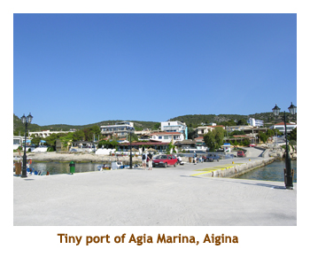
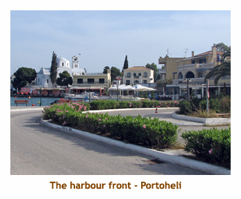

[ Home ] [ Travel ] [ Photography ] [ Pets ] [ Games] [ Rowing] [ Physics ]


A Visit to Athens and the Greek Isles - Part 2
Travel
Cruises
Past Cruises (Diaries)
Future Cruises
Rogues Galleries
Land Trips
Diaries (Land Trips)
Hawai'i - Big Island - 04'01
Hawai'i - Maui - 05'02
Hawai'i - Big Island - 04'03
Hawai'i - Kaua'i - 09'04
Hawai'i - Big Island - 04'06
Hawai'i - Maui - 04'06
Mainland China - 05'07
Phoenix, Arizona - 12'07
Greek Isles - 05'08
Hawai'i - Kaua'i - 09'08
Hawai'i - Big Island - 09'09
Hawai'i - Maui - 05'12
Hawai'i - Big Island - 04'13
Ireland - 08'13
Mexico - Cancun 11'13
France/Belgium/Lux 07'15
Hawai'i - Big Island - 05'17
England / Wales - 06'17
Hawai'i - Big Island - 09'19
Photography
Cameras
Underwater
Pets
Tara
Blackie
Whitey
Muffy
Ollie
Rusty
Fluffy
Rufus&Dufus
Games
Rowing
Physics
Day 6 (May 26) - Sailing to Aigina (Pop. 12,400)
 We arrived in Piraeus harbour about 4:00 PM, ready to board the Kapetan Antonis for our island adventure. The crew was there to meet us and we carried all of our belongings aboard. Marj and I were assigned one of the bigger cabins, but it was tiny just the same. We unloaded our bags and stored our clothes in the minimal space provided. We flipped a coin to see who got to use the hanger in the closet. Then it was back up on deck for the sail away party. Whoops, we had to wait for someone missing. It was the lady who had lost her handbag. She was still involved in last minute negotiations relative to either her passpaort or credit cards.
Finally she arrived and we set off from the harbour. Whoops, we couldn't
get the anchor up. Turns out we were hooked on the anchor from another
yacht across the harbour. After much frustration, the crew finally freed the
anchor and, yes, we were really under way! It was 6:00 PM by this time.
We had a short sail across open water and arrived at the island of Aigina about 7:30. We docked on the east side of the island at a little village called Agia Marina. We had dinner about 8:00. Some of the people headed in to the little town after dinner. Sleeping was a bit of a problem this night. The ship was anchored in open water and it rocked side to side most of the night. The rocking wasn't a concern, but the creaking of our cabin wall was extremely loud. We also opened our porthole, and let in several mosquitos. It's funny though, for the rest of the cruise we didn't have a creaking wall or mosquitos again. Get all the problems over with on the first night!
The next morning we had what was to be our "standard" breakfast. A
plate of ham and cheese slices, one type of cereal, dry bread, fried
eggs and sausage or bacon, sliced apple
and honeydew melon, and orange juice. I really missed the variety of
milk, yoghurt, fresh vegetables, fruit, juices, etc that we had at the hotel.
Oh well, it was still good.
After breakfast (9:00) a bus picked us up for a tour across the island. First we headed up the hill to the Temple of Aphaia. The Doric temple dates from 490 bce. We were the first tour group to arrive and it was nice to wander the site without crowds of people. The columns were carved from a very soft local limestone with lots of embedded shells. They were very eroded. It was an amazing site.
We then travelled across the interior of the island stopping at the old
village of Palaiochora. Populated since Byzantine times, it was destroyed
by Barbarossa in 1537. The surrounding area was abandoned in 1856. We
climbed up the mountainside examining the ruins, then returned to the bus.
I notice that a lot of the islands have a village called Palaiochora, which
means "Old Town".
We continued across the island arriving at Aigina Town by 11:00. This was a good sized town, much larger that Agia Marina. We wandered around the town on our own. I found a great smoothie shop - the only really good one that we found on all the islands that we were to visit. Aigina is known for its pistachio nuts, and there were shops selling them everywhere. I think quite a number of people bought some for the cruise. As we wandered through the narrower streets, we came upon a large fish market. Lots of interesting fish there. We were back to the bus by 12:30 ready to travel back to Agia Marina. Once back we had time for a quick "lunch on your own". We found a quiet little restaurant (we were the only customers) and had a great Greek salad (and Mythos beer). The feta cheese was creamy, with a consistency of cream cheese. It was great.
Finally we boarded the ship at 2:00 and set sail for the island of Hydra.
Aigina was a beautiful island and I would really like to see more of it.
Day 7 (May 27) - Sailing to Hydra (Pop. 3,000)
So, we left Aigina around 2:00 PM and headed for Hydra. It was quite a long haul. We traveled along the mainland, passing the island of Poros along the way. Our original itinerary said we were going to stop at Poros, but I guess the plan changed. After nearing the island of Hydra, we pulled in to a small bay for a swim stop. I think this bay is called Mandraki. After an hour or so break, we continued onwards. It was 4:00 and John started his first reading from Homer's Odyssey, as we gathered on the upper deck. This was to become a daily event. I guess it was also sleep time for some, but John didn't seem to mind.
We arrived at Hydra Town about 6:30. We had a couple of hours
to walk around the island in the evening sun, as dinner was to be at 8:30.
We headed off with Lee and Lynn. The island is pedestrian only, so there
were no cars or motorbikes anywhere.
Walking along the waterfront, we encountered a number of donkeys and mules
carrying luggage up to some hotel. It seems like this is a common means of
transport, judging from the number of donkeys we saw. The waterfront was
lined with outdoor restaurants. A good place to eat and watch donkeys!
We walked on around to the east side of the harbour where the old fort and
canons were. As we walked into the fort area, a lady shouted out from
a balcony "You can't go there, it's private property" (or something like that).
We obediently turned around. The lady laughed and said "Not you,
the sailboat". Sure enough a sailboat was trying to moor where it
shouldn't have been. So, we turned around again and climbed up to the
canons and a great view of the harbour. The fort consisted of several
buildings, one of which had been transformed into a naval museum.
The museum was closed so we didn't go in. Directly across the harbour
was another military complex, which apparently is now a school of
fine arts.
A high speed ferry arrived at the ferry dock and we could see the donkeys heading over to carry luggage. We were to see many high speed "Vodafone" ferries (or "Flying Dolphin" hydrofoils) during our trip. They were very fast, averaging 30 minutes between neighbouring islands.
Lee spotted
some church spires up the hill that looked interesting. We decided
to hike up the narrow streets and try to find the church. Once away from the
waterfront, the streets (ie. paths) were narrow with high walls. It was difficult to
know which way you were going other than up or down. Every so often we
would come to an intersection guarded by a donkey or mule. After climbing
some serious stairs, we finally found the church. The sun was starting to set,
so we headed back down to the waterfront. What a wonderful little town!
We were back onboard the Kapetan Antonis by 8:30 for dinner. Dinners were wonderful aboard. The cook had a minimal area for preparing the meals but did a fantastic job. He was cooking for 21 people, and we never went hungry. I don't think that we ever finished everything he cooked - I imagine the crew got to finish it. I didn't keep track of what we had each meal, but he never repeated the main course. We had several kinds of fish, spanikopita, moussaka, pastitsio, kleftes, souvlaki, calamari, octopus, beef, and many other dishes.
Tonight the ship was in protected waters, so there was no creaking. It
was just very warm in the cabin. The next morning we were up early, seated
on the upper deck. The harbour was beautiful in the morning sun.
Breakfast call was at 8:00. After breakfast we raised anchor and headed
for the island of Spetses.
Day 8 (May 28) - Sailing to Spetses (Pop. 3,700), Nafplio
It was a short trip to Spetses. We left Hydra about 9:00 AM, and arrived at
Spetses Town about 10:00. We had two hours to wander around before
having to be back on the ship again. We had docked pretty well in the
center of the town, so decided to head towards the southern end of the harbour.
We walked past the "downtown" buildings and a small church and then along
the seawall lined with residences. After reaching a point of land, we rounded the
corner onto another small marina. We decided we had gone far enough and
turned around retracing our steps back to the ship. Still having some time, we
explored the area nearby the ship. The sidewalks and patios were
decorated with white and black pebble patterns - much like you see in
Chinese gardens. Apparently Spetses is famous for these pebble
mosaics. We also checked out the statue of Bouboulina, the female
admiral from the early 1800's. Finally, we joined some others wandering
a small strip of beach. A local fisherman was cleaning some small fish
at the edge of the beach.
We were back on the ship by 12:00 noon, and ready to leave for Nafplion.
Nafplion is not on an island, it is on the Peloponnese peninsula. So,
we were heading back to the mainland for a couple of days.
It was quite a distance to Nafplion. We would be sailing up the coast of the
mainland. After about an hour of sailing, we stopped at a small bay for a
swim break. This must have been on the peninsula. After the swimmers
were back on board again, we continued up the coastline. Lunch was served
about 2:00. The seas were very calm, so it was no problem serving and
eating lunch while under power. At 4:00, John did another reading to us
from the Odyssey. Once again everyone was attentive, but some were
concentrating with their eyes closed. The upper deck was perfect for
lounging around, or listening to the readings. It was half covered with a
large blue tarpaulin which allowed people to sit in the shade or in the
sun. I found the sun to be quite hot sometimes.
We arrived at Nafplion Harbour around 5:00. Nafplion is an interesting city.
From 1829 until 1834, Nafplion was the first capital of newly liberated
Greece (from the Turks). The first king of Greece (King Otto, I think) moved
the capital to Athens in 1834. The importance of Nafplion to both the Turks and
the Venetians over the centuries resulted in fortifications being built in the
harbour and up the surrounding hills. From the ship we could see the
Palamidi fortress up on the hill, and the fortress on the island of Bourtzi,
right in the middle of the harbour. The island fortress was most recently
a luxury hotel (now closed). So, into this historic harbour we sailed,
approached our berth, when something happened. We turned around and
sailed out of the harbour again. This was accompanied by much shouting
between the crew, to the point where I thought they were going to kill
each other. Apparently, though, this is just how Greek is spoken. It
turned out that a transmission pin had sheared off and the ship couldn't
go into reverse. Outside of the harbour, repairs were made and we once
again triumphantly sailed into the harbour. It was 6:30 when we
finally docked.
The remainder of the day was "dinner and evening on your own". After such
a big (and late) lunch on the ship, neither of us was too hungry, so we stopped
at a gelato shop for a snack. We wandered around the town center. The main
streets were regular pavement, but the smaller streets and
walkways were paved with marble blocks. We found
a large plaza (Plateia Syntagmatos)
that was surrounded by souvenir shops, restaurants and a large
church. Kids were playing soccer using two statues as goal posts.
Marj bought some coasters at a small souvenir shop. They had pictures
of whitewashed buildings that looked like Santorini. We traversed a few
more narrow, bouganvillia lined streets, saw several interesting churches
(didn't go in them) and then headed back to the
ship for the night.
Day 9 (May 29) - Exploring ancient Greece
Today would be spent on the mainland visiting the historic sites of Mycenae,
Tiryns and Epidaurus. We had the regular breakfast at the regular time and
then boarded the bus for the adventure. As we boarded we met our guide
for the day, Tina. She was very knowledgeable and spoke very good English.
Our first stop was to be Mycenae,
which was about an hour's drive from Nafplion. The Greek countryside
was very interesting. It is a very hot, dry climate and the lanscape reminded
me of the Kamloops area. Lots of rolling hills, very few trees (mostly scrub), but
lots of low bushes. The overall colour is brown, with green shrubs contrasting
with the brown. Along the highway we saw a lot of yellow gorse. The
valleys are heavily irrigated with the main crops being olive trees, citrous
trees (oranges, lemons) and grapes. Like the Okanagan Valley, this gives
the illusion of a much lusher climate. A lot of the buildings seem to be under
construction or deserted (I find it difficult to tell the difference). Also, it is quite common
for one or two story buildngs to have great clusters of rebar projecting up
from the roof. Apparently this makes the building "incomplete" which
has tax implications. At least that's what one of our group explained.
We arrived at Mycenae about 10:00. It was very hot. We bought our tickets and entered the site. The first thing we saw was the "Lion Gate", dating to the 13th century bce. Then we stopped at the grave circle. Following the Cyclopean walls, we encountered the main part of the city and the royal palace. At the far end of the site we went down a flight of stairs into the earth where a cistern had been built. It was so nice and cool down there! It was nice that we had done the Mycenae exhibit at the museum in Athens. Mycenae was the home of legendary Agememnon.
Leaving the site, we stopped at the gift shops near the entrance gate where they
sold freshly squeezed orange juice. Marj had a large glass and really enjoyed it.
We walked back to the bus for a short ride to the tombs of Mycenae.
Here we visited the most complete tomb, called the Treasury of Atreus.
It was a huge underground beehive shaped building, made out of huge
blocks of stone. The tomb is now empty (except that we
were in it), but it was still an amazing structure.
Then it was on to the bus and off to Tiryns. The Tiryns site was more in ruins than Mycenae. Only the Cyclopean walls were still intact. It was very hot there with no shade. We wandered through the site looking at the foundations of ancient buildings. Tiryns was built on a hill, so the site provide great views of the surrounding valleys. We could see the orchards of olive trees, and, in the distance, the port of Nafplion.
Then it was back in the bus and off to lunch. At 2:00 we stopped at a restaurant
in a small village near Epidaurus. I think the village was Ligourio. It was
"lunch on your own". We sat with Keith and Carrie and had mousaka (I think).
Back on the bus, we arrived at Epidaurus at 3:30. Entering the
site we first encountered the huge theatre, built in the 4th century bce. It was
remarkably intact. The accoustics were amazing. There was a spot in the
center of the stage area that provided a perfect sound reflection focal point.
Even speaking in a normal voice, one could hear the immediate
reflection. Wow! The theatre is still used for outdoor productions.
 Then we walked on to the remains of the religious center. There was a lot of reconstruction going on, including repair and raising of fallen stone pillars. We also saw the remains of a stadium. This was used every 4 years for the festival in honour of Asklepios. It was still very hot out so I think most of us had pretty well had it for the day. Fortunately it was time to head out again on the air conditioned bus.
At this point we headed south to the village of Portoheli. Our ship had
moved to this new location while we were exploring ancient Greece. The
port was a 2 hour sail south of Nafplion, so we would gain those 2 hours tomorrow
morning when we would set sail for Sifnos. We reboarded the ship around
6:00. We had time for a quick walk around the town. It was a beautiful little
port town. The harbour was full of colourful fishing boats, and there was
a large white church along the waterfront.
John did a reading from
the Odyssey at 7:00 and then we were called to dinner
about 8:30. It was pastitsio tonight! After dinner we did a quick walk
along the sea wall and then to bed.
Day 10 (May 30) - Sailing to Serifos (Pop. 1,100)
Today we were leaving Portoheli heading for Sifnos. It was to be our longest open water sailing of the trip - about 8 or 9 hours. Fortunately we had bused down to Portoheli yesterday, or we would have had 2 more hours of sailing. The captain had promised an early start, and, sure enough, the engines fired up at 4:55 AM. Our voyage started our with fairly calm seas, and gave no warning that this was to become our "day from hell". We got up shortly after and headed to the upper deck. It was starting to get a bit rough and the ship was rocking a bit. By the time that our normal breakfast time rolled around (so to speak), it was rough enough that breakfast had been cancelled.
Our direction of sailing took us across the wind, so we were parallel to the
waves. This made the side-to-side rolling very pronounced. A number of people
were curled up in various places around the ship, clutching plastic shopping bags.
I don't think they had been shopping! I felt sorry for the group, but there
was nothing that could be done.
The rough seas continued throughout the day. In the kitchen and dining areas, things were not
properly battened down, and china and glasses were being thrown around and breaking.
A number of us stayed up
on the top deck, while others found "safe havens" elsewhere. Marjorie decided
to stay lying down in our cabin below. The time passed really, really slowly.
I had done a lot of sailing in English Bay (Vancouver) in my youth,
including once or twice
where it was so rough that we tied ourselves to the cockpit. The bouncing around
had never bothered me. However, seeing the effects on the other passengers
was very disturbing, and it really was dangerous to walk around.
By noon, I decided to head down below and check up on Marjorie. It was
very difficult to walk across the deck and then go down the ladder. When
I made it to our cabin. Marjorie seemed OK. I lay down as well and closed my eyes.
I guess I was tired from not sleeping so well since we arrived in Greece, and
immediately fell asleep. I woke up a bit later and the boat was thrashing quite violently.
I later found out that the folks trapped on the upper deck were being thrown about.
Two people were tossed right out of their chairs, and some of the chairs had broken.
There was nothing they could do as it was impossible to cross the deck and
do the ladder. Down below, unaware of what was happening above, I went back
to sleep.
When I woke up again, it was strangely calm. Looking out the porthole, we were near an island. I went up above and it turned out that the winds and seas hadn't abated, but we had sailed into the lee of the island and were quite protected. During the course of the day the captain had changed our itinerary, heading to Serifos rather than Sifnos, saving an extra hour of agony. In retrospect, I think that if the captain had realized how bad it was going to be, he would not have sailed at all that day. Considering the damage done to the ship (dishware broken, chairs broken, a metal mainstay snapped, etc) and the threat of injury to the passengers, I'm sure the decision would have been to wait a day.
Anyway, here we were in beautiful Serifos, and it was time for lunch (2:00
PM). It was amazing how quickly people seemed to recover. The cook whipped
up a batch of delicious spaghetti, which disappeared quite quickly. But
then, we hadn't had breakfast! We were given the afternoon "on our own".
We walked into the little town and browsed the shops. Paul and I walked
to the base of the Chora, planning to walk up for the view, but as it was
stinking hot, we decided not to. A transit bus went by us, but wouldn't
stop.
We headed back to the dock area and watched a huge high speed ferry pull up to the dock. It was packed with people and vehicles. The foot passengers swarmed off of the ferry, some meeting greeters on the dock. The vehicular traffic threaded through the flocking passengers, as there was no attempt to segregate pedestrians from vehicles. Three small trucks were loaded with large terra cotta pots, furniture, and other items for tomorrow's flea market.
We were back on the ship at 7:00 PM for another reading from the Odyssey.
I think Odysseus would have been proud of our group and how we
battled the worst that Poseidon could throw at us and won.
People seemed no worse for wear, and we headed down for dinner at 8:00.
It had been an eventful day, one that wouldn't soon be forgotten. We
did a short walk about on the dock and then headed off to bed.
Day 11 (May 31) - Sailing to Sifnos (Pop. 1,950), Folegandros (Pop. 650)
Today would be a two island day. We were headed to Sikinos and would stop for the afternoon in Sifnos. I got up early and headed up to the upper deck to join the other early risers. The call to breakfast was at 8:00. We had the usual for breakfast. At 9:00 the engines fired up and we were underway to Sifnos.
Back up on the upper deck, Serifos was behind us and we could see Sifnos in the distance. The Cycladic islands are fairly close together and, for most of our travels, we could see the island that we were sailing to as soon as we left the previous island. Only a couple of times were we surrounded by open water with no land in sight. It was interesting when several islands were in view and people had their maps out trying to identify which island was which.
We arrived at the island of Sifnos about noon. We stopped in a small bay
for a swim (perhaps Vourlidia Bay?). A couple of impressive yachts entered the
bay while we were there, and anchored nearby.
After the swim, we were ready to sail on to Kamares for lunch. However, the captain decided to take the opportunity to try to fix the leak that was dripping on someone's bed. It was related to the air conditioner or the engine, I never did hear which. It took about 1.5 hours of tinkering and I'm not sure if that fixed the leak or just moved it. It seemed to be an unusual decision to spend the time floating in the bay rather than fixing the problem during our lunch stop in Kamares. Oh well, there must have been a reason.
After a short sail we arrived in the port of Kamares. It was a small village
with a single main street. There was no Chora visible above in the hills. We
wandered around for a while checking out the restaurants and then settled
on one that served crepes. I had a delicious ham, cheese and vegetable
crepe that was very good (with a Mythos beer, of course). Marj had a crepe
and a sorbet, and I think Paul had a crepe as well. Robin and Fred came
along and joined us at a neighbouring table and they had gelatos.
It was a beautiful little island and we really enjoyed our stop over.
 At
4:00, we boarded the Kapetan Antonis ready to travel to Sikinos.
However, at some point in the afternoon, the captain suggested that Folegandros
would be a much nicer island to visit. So, Sikinos was scratched from the
itinerary and Folegandros was added. It was about a 2 hour trip and we
docked at Karavostasi, a small marina village, at about 6:00 PM. Tonight
was to be a BBQ, and the time was set for 10:00 PM (or so). We
wandered along the main street and came to a bus terminal. We had just missed
the bus that went up to the Chora (called Folegandros Town). Then, out
of nowhere, a bus came hurtling down the road. Four of us jumped on the bus
ready to go to the Chora. However, the bus took us back to the ship. It
turned out that the captain had called the bus to take the entire group up to
the Chora. Everyone else climbed aboard and we were driven up to the Chora.
It was some distance up a narrow winding road, so it must have taken about
15 minutes or so. What a beautiful village. I can see why the captain diverted
us to Folegandros!
At
4:00, we boarded the Kapetan Antonis ready to travel to Sikinos.
However, at some point in the afternoon, the captain suggested that Folegandros
would be a much nicer island to visit. So, Sikinos was scratched from the
itinerary and Folegandros was added. It was about a 2 hour trip and we
docked at Karavostasi, a small marina village, at about 6:00 PM. Tonight
was to be a BBQ, and the time was set for 10:00 PM (or so). We
wandered along the main street and came to a bus terminal. We had just missed
the bus that went up to the Chora (called Folegandros Town). Then, out
of nowhere, a bus came hurtling down the road. Four of us jumped on the bus
ready to go to the Chora. However, the bus took us back to the ship. It
turned out that the captain had called the bus to take the entire group up to
the Chora. Everyone else climbed aboard and we were driven up to the Chora.
It was some distance up a narrow winding road, so it must have taken about
15 minutes or so. What a beautiful village. I can see why the captain diverted
us to Folegandros!
From where we were let off the bus, we could see a beautiful church way up on a hillside (called Koimisis tis Theotokou, you can see it in the accompanying photo above). There was a very nice switchback path so several of us headed up to the church. Along the way were wonderful views looking down the cliffs to the ocean below. We wandered around the church yard, but the church itself wasn't open. Then we headed back down the path to the town. As we entered the town, we diverted through some narrow pathways that were actually part of a beautiful hotel. It consisted of many one and two story whitewashed buildings, some joined together. We stopped in at the lobby to pick up a brochure. The rooms cost about $150.
It was getting dark by now and the village was bustling. The outdoor restaurants
were busy and there were lots of people milling about. It was a wonderful
warm evening, so we just wandered through the area. I envied the lifestyle
of the locals meeting for the evening outside in the sidewalk bars and
restaurants. What a life! Then it was 9:30 and time to meet the bus to go
back to the ship. As we approached the ship, there was billowing smoke,
so we knew the BBQ was not far off. We had lamb and I think another meat -
maybe beef? It was very good. The leftover kabobs were thrown on the dock where
about 15 feral cats came out of the rockery and devoured the meat. Then
it was to bed.
Day 12 (June 1) - Sailing to Thira (Santorini, Pop. 12,500)
 Today we were travelling to Thira (or Santorini), the first place in Greece that we
had been to before (Oct 2006). It was a 4 hour trip and we had to be there by 9:00
to meet our guide. So, we left Folegandros at 5:00 AM. I did my usual sailaway
routine on the upper deck. Breakfast was at 8:00. There was no swim
stop on the way today. We arrived at Thira at about 9:00. We departed the ship
and walked along the waterfront to the base of the cable car list. There were
very few people there. so we got on right away. The ride up was less than 2 minutes
so we were soon all up at the top, in Fira town, We had to wait a bit for the guide
to show up. His name was Kostas, and he was a very good guide.
Today we were travelling to Thira (or Santorini), the first place in Greece that we
had been to before (Oct 2006). It was a 4 hour trip and we had to be there by 9:00
to meet our guide. So, we left Folegandros at 5:00 AM. I did my usual sailaway
routine on the upper deck. Breakfast was at 8:00. There was no swim
stop on the way today. We arrived at Thira at about 9:00. We departed the ship
and walked along the waterfront to the base of the cable car list. There were
very few people there. so we got on right away. The ride up was less than 2 minutes
so we were soon all up at the top, in Fira town, We had to wait a bit for the guide
to show up. His name was Kostas, and he was a very good guide.
Our first activity was a walk to the edge of the village to the Archaeological
Museum. This museum housed all of the artifacts found at Akrotiri and
Ancient Thira. There were a lot of pottery remains and some wonderful wall
mosaics and paintings (frescos). It was a great museum. We hadn't visited the
museum on our previous trip, so this was new to us.
After completing the museum, we headed down the street to the bus that was waiting for us. From there we drove southeast to the black sand beach village of Kamari. The previous time we were here, it was late October and the beach was deserted. This time it was decorated with rows of beach umbrellas and lounge chairs. From Kamari we were to head up the mountain on a narrow switchback road to the site of Ancient Thira (we hadn't been there before either). Due to the narrowness of the road, we had to swtich to a smaller 16 passenger bus. That meant that some of us had to wait at the beach for the bus to return for a second load. One lady in our group thought that the switchback would be to much for her, so she stayed in Kamari. It was a good decision as the drive up was very slow and pretty nerve racking.
At the top we joined the rest of the group and then hiked further up the hill
to the ruins. It was a very large town overlooking the ocean below. Some
of the ruins are from the 4th century bce, while other "newer" ruins are from
Hellenistic and Roman periods.
We wandered around the ruins for over an hour. At one spot, looking down the mountainside, was a large amphitheatre. It would have had a marvelous view. Once again it was a very hot day and there was little shade on the site. When we had completed the ruins, we headed back down the pathway to the bus. This time we decided to pack all 21 people (including the guide) onto the bus and do the trip down in one go. Some of us sat on the floor. It was a hairy ride down, often not being able to see any road beneath us. The bus had to go slowly because most of the road was cobbled, and the switchback turns were extemely tight. We met a number of cars coming up, and that was fun negotiating passing.
At the bottom we rejoined our beach girl and piled into the large bus
for the ride back to Fira.We arrived at Fira about 2:00 for lunch and the
afternoon "on our own". We wandered around Fira a bit and then stopped
at a wonderful restaurant with Fred and Robin. I had lamb kleftes and a beer.
Yum. I think Marj had yoghurt and honey.
After lunch we wandered some more and then decided to head back down to the ship. Fred and Robin were going to do the gondola, but Marj and I decided to walk down the donkey path (as we had done on our previous trip). The top part of the path was a little slow as we had to navigate through a herd of waiting donkeys. There must have been 20 of them. It was very hot in the late afternoon sun, so we took our time walking down. The view was fabulous as we walked down, with the blue sky and sunshine on the buildings. After about 20 minutes or so we reached the port (Skala Firon) below. I just had to have a gelato, so we checked out the restaurants along the waterfront and found one that served gelato. We boarded the ship about 5:00. Dinner was to be at 8:00, so we had a nice read on the upper deck.
Dinner was about 8:00. Another great meal. We had another reading from
the Odyssey at 9:00. I was getting to really like the readings. Then it was time for bed.